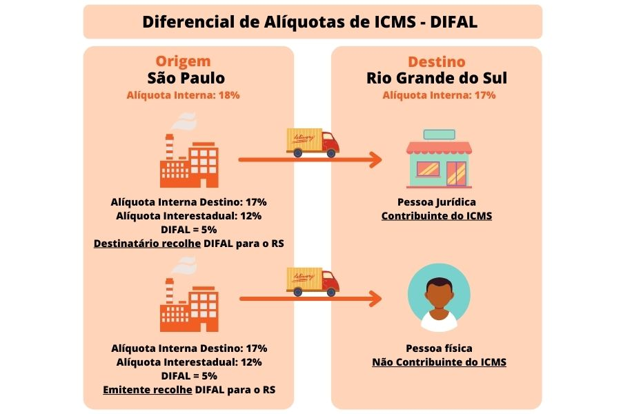

Texto atualizado em 01/2025.
O Diferencial de Alíquotas surgiu na Constituição Federal de 1988, mais especificamente no art. 155, incisos VII e VIII do § 2º, para determinar e equilibrar situações em que as operações e prestações de serviço eram destinadas mais para o estado de origem do que para o estado de destino. Como por exemplo em situações com:

Já a Emenda Constitucional nº 87/2015, publicada em 17 de abril de 2015, apresentou uma significativa alteração no conceito e no cálculo do ICMS nas operações interestaduais realizadas com consumidor final não contribuinte do imposto.Por se tratar de uma alteração na Constituição Federal, as novas regras passaram a valer apenas no ano seguinte, ou seja, a partir de 1º de janeiro de 2016.
Com as novas regras, as operações com consumidor final contribuinte ou não do imposto passaram a ter as mesmas alíquotas de ICMS aplicáveis, ou seja, não serão mais utilizadas as alíquotas internas da UF origem nas operações com consumidor final não contribuinte, e sim as alíquotas interestaduais como em qualquer outra operação.
Apesar da Emenda ter recebido o "apelido" de emenda do e-commerce, pois gera maior impacto nas operações de vendas pela internet e telefone, as novas regras serão aplicadas independente da operação ser via e-commerce ou presencial.
O DIFAL basicamente é a diferença entre a alíquota interestadual e a alíquota interna na UF de destino e conforme determinado pela Emenda Constitucional o recolhimento deste valor é de obrigação do estabelecimento remetente quando o destinatário não for contribuinte do ICMS.
Também foi definida uma regra transitória para adequação dos caixas dos estados, sendo então o diferencial de alíquota partilhado entre os estados de origem e destino durante alguns anos. Inicialmente a maior parte foi recolhida para a UF Origem, sendo gradativamente recolhida em maior parte para a UF Destino, até que em 2019 foi recolhida 100% para a UF de Destino. Veja a tabela abaixo:
| UF Origem | UF Destino | |
|---|---|---|
| Tabela 2016 | 60% | 40% |
| Tabela 2017 | 40% | 60% |
| Tabela 2018 | 20% | 80% |
| A partir de 2019 | 100% |
Importante
Nas operações de aquisição de mercadorias/materiais para uso e consumo e imobilizado, já havia incidência do diferencial de alíquota quando a operação era destinada a contribuinte do imposto. Essa operação continua da mesma forma, ou seja, o recolhimento do diferencial de alíquota continua sendo realizado apenas para o estado destino e recolhido pelo destinatário. Neste caso não há partilha do ICMS!
A versão 1.40 da Nota Técnica 2015.003 trouxe uma nova interpretação com relação a base de cálculo do DIFAL e do ICMS próprio. De acordo com o entendimento do CONFAZ, o valor da operação deverá contemplar o montante do imposto devido na UF de destino, sendo que a base do DIFAL será o valor da operação, conforme consta no Convênio ICMS 93/2015 e na base do ICMS próprio será desconsiderado o ICMS da UF de origem e incluído o ICMS da operação, calculado "por dentro" de acordo com o conceito do ICMS. O Diferencial de alíquota neste caso será calculado da diferença do total do imposto na UF de destino diminuído do imposto da operação (pago à UF de origem).
Importante
Os estados poderão definir a forma de cálculo do DIFAL em seus regulamentos de ICMS, ou seja, será necessário observar qual o procedimento cada estado irá adotar, se irá seguir a determinação do CONFAZ (Base Dupla) ou irá manter o diferencial de alíquotas sobre a mesma base de cálculo (Base Simples).
O cálculo do ICMS nas operações interestaduais com consumidor final não contribuinte sofrerá significativas alterações, veja abaixo:
| Antes (Até 31/12/2015) | Depois (A partir de 01/01/2016) |
|---|---|
| Independente da UF de destino é aplicada a alíquota interna da UF de Origem (ex.: 17%,18% ou 19%). |
Observar a alíquota interestadual:
Em todos os casos haverá o recolhimento do diferencial de alíquota, calculado a partir da diferença entre a alíquota interestadual e a alíquota interna do produto na UF de destino. Exemplo: Operação de SC com MG. Alíquota interestadual: 12%
|
Vamos simular a mesma operação nos dois cenários. Operação interestadual (SC > MG) com consumidor final não contribuinte no valor de R$ 2.000,00.
| 2015 | 2016 (Base Simples) | 2016 (Base Dupla) |
|---|---|---|
|
|
|
De acordo com o Convênio ICMS nº 93/2015 o recolhimento do diferencial de alíquota para a UF de Destino deverá ocorrer via GNRE ou documento similar definido pela legislação estadual. Os estados poderão definir também se o recolhimento será por documento ou poderá ser mensal mediante a inscrição como substituto tributário do Remetente da UF de Destino (mesma dinâmica do ICMS ST).
O Fundo de Combate à Pobreza, também conhecido como FCP ou FECP, está previsto na Constituição Federal e pode ser adotado pelos estados desde que seja regulamentado em suas legislações.
Na prática o FCP representa um adicional do ICMS de no máximo 2% nas operações com determinados produtos (definidos na legislação de cada estado).
Esse adicional deve ser aplicado em todas as operações com estes produtos, seja na venda por contribuintes do estado onde o FCP está instituído, vendas interestaduais com Substituição Tributária ou na compra por contribuintes do ICMS para uso e consumo, onde eles recolhem o FCP e agora (a partir de 2016) na venda para não contribuintes onde o recolhimento será de responsabilidade do destinatário.
Esse valor será recolhido para o estado de destino que tiver o FCP instituído e deverá ser destacado na Nota Fiscal Eletrônica, inclusive.
Importante
Não há partilha do FCP, o seu recolhimento será apenas para a UF de destino.
| Exemplo de uma operação interestadual com consumidor final (SC > RJ) com um produto enquadrado no FCP em 2016 (Base Simples) |
|---|
|
Devido as alterações no cálculo do ICMS e para receber as informações pertinentes ao DIFAL e ao FCP as obrigações acessórias, como emissão de documentos fiscais e escriturações e declarações eletrônicas sofreram alterações.
A Nota Técnica 2015.003 da NF-e trouxe algumas novas tags a serem informadas no arquivo XML, além de regras de validação.
O grupo <ICMSUFDest> que contempla as tags relacionadas ao diferencial de alíquota, partilha e FCP deve ser obrigatoriamente informado nas notas fiscais de operação interestadual (idDest=2) com consumidor final (indFinal=1) não contribuinte (indIEDest=9), caso não seja informado as notas fiscais serão rejeitadas.
Por enquanto não há alteração no leiaute do DANFE, mas as empresas remetentes devem informar, no campo de "Informações Complementares", os valores descritos no grupo de tributação do ICMS para a UF de destino.
Conforme consta na versão 1.10 da Nota Técnica 2015.003 o ambiente de produção estará disponível em 01º/12/2015, porém por força da legislação maior (EC 87/2015) as informações serão exigidas e consistidas apenas a partir de 01º/01/2016.
Importante
O grupo <ICMSUFDest> não deverá ser informado na NFC-e, uma vez que as operações acobertadas pela NFC-e sempre serão internas (CFOP iniciada em 5).
Da mesma forma, no arquivo XML do CT-e também deverão ser informadas as tags relacionadas ao diferencial de alíquota e partilha do ICMS no grupo <ICMSUFFim> conforme consta na Nota Técnica 2015.003 do CT-e.
Ainda não existem regras de validação para o CT-e, mas na prática as informações são exigidas quando a operação for interestadual com consumidor final não contribuinte, sendo deste a responsabilidade pelo pagamento do frete.
As informações do grupo <ICMSUFFim> também deverão ser informadas no DACTE como informações complementares.
Conforme o Ato COTEPE/ICMS nº 44/2015 também foram criados novos registros nos blocos C, D e E onde estão dispostas informações relacionadas ao diferencial de alíquota e FCP.
Importante
As informações no SPED Fiscal serão exigidas a partir da competência de fevereiro de 2016 (referente a movimentação de janeiro).
Outra questão apresentada pelo Convênio ICMS 92/2015 e a NT 2015.003 da NF-e é o CEST - Código Especificador da Substituição Tributária. Trata-se de um novo código que deverá ser informado nos itens das notas fiscais que estiverem sujeitos a Substituição Tributária, mesmo que em operações anteriores ou posteriores.
A partir de 1º de abril de 2016 este código será obrigatório. Na Nota Técnica 2015.003, constam regras de validação que serão implantadas futuramente e irão implicar na rejeição das notas que tiverem valor de ST em algum item e este não tiver o CEST informado.
A lista dos códigos CEST está disponível no anexo I da Nota Confaz S/N de 20/10/2015.
Em caráter de urgência, no dia 20 de dezembro de 2021 foi votado pelo Congresso Nacional o Projeto de Lei Complementar nº 32/2021, que regulamenta as operações envolvendo mercadorias destinadas a consumidores finais de outras unidades federativas, logo após a aprovação foi encaminhado para sanção presidencial para ser publicada o até final do mesmo ano.
Entretanto, apenas no dia 05 de janeiro de 2022, foi publicada a Lei Complementar n° 190/2022 oficializando a cobrança do diferencial de alíquotas de ICMS. Conforme o artº 3º a lei entra em vigor a partir de 05/04/2022, observando a data de publicação da norma e do princípio anterioridade nonagesimal, referência mencionada na própria lei complementar (art. 150, inciso III, alínea "c", da Constituição Federal).
Teoricamente a Lei Complementar também deveria ser observada o princípio da anterioridade anual, a que se sujeita o ICMS, na qual as orientações somente poderiam entrar em vigência a partir de 2023, porém está não é mencionada na nova lei, o que vem gerando muitas dúvidas aos contribuintes em relação a sua vigência.
Como os estados e o Distrito Federal possuem autonomia para regulamentar sobre esse imposto, já está sendo divulgado por alguns deles o parecer em relação a vigência dessa obrigação.
Confira abaixo o posicionamento das Unidades Federativas até o momento (sujeito a alterações):
Tabela atualizada em 13/04/2022
Tabela de posicionamento das Unidades Federativas em relação a LC nº 190/2022 - DIFAL para não contribuintes
| UF’s | Posicionamento: | Publicado em: | Vigência: |
|---|---|---|---|
| Acre (AC) | Comunicado | 04/03/2022 | 01/03/2022 |
| Alagoas (AL) | Comunicado s/ nº de 2022 | 17/01/2022 | 01/04/2022 |
| Amazonas (AM) | Nota SEFAZ | 07/01/2022 | 05/04/2022 |
| Amapá (AP) | Sem posicionamento | ||
| Bahia (BA) | Lei nº 14.415/2021 | 31/12/2021 | 01/01/2022 |
| Ceara (CE) | Comunicado SEFAZ | 04/01/2022 | 01/04/2022 |
| Distrito Federal (DF) | Sem posicionamento | ||
| Espirito Santo (ES) | Sem posicionamento | ||
| Goiás (GO) | Nota no Anexo XV do RICMS | Sem data | *I. |
| Maranhão (MA) | Sem posicionamento | ||
| Minas Gerais (MG) | Comunicado Sutri nº 1/2022 | 09/02/2022 | 05/04/2022 *V |
| Mato Grosso (MT) | Sem posicionamento | ||
| Mato Grosso do Sul (MS) | Sem posicionamento | ||
| Para (PA) | Sem posicionamento | ||
| Paraíba (PB) | Lei nº 12.190/2022 | 13/01/2022 | *II. |
| Pernambuco (PE) | Lei nº 17.625/2021 | 31/12/2021 | 05/01/2022 |
| Piauí (PI) | Lei nº 7.706/2021 | 23/12/2021 | 01/01/2022 |
| Paraná (PR) | Lei nº 20.949/2021 | 31/12/2021 | 31/03/2022 |
| Rio de Janeiro (RJ) | Comunicado | 04/2022 | 05/04/2022 |
| Rio Grande do Norte (RN) | Comunicado SEFAZ | 05/01/2022 | 01/04/2022 |
| Rondônia (RO) | Sem posicionamento | ||
| Roraima (RR) | Lei nº 1.608/2021 | 30/12/2021 | 30/03/2022 |
| Rio Grande do Sul (RS) | Comunicado SEFAZ | 11/02/2022 | 01/04/2022 |
| Santa Catarina (SC) | Medida Provisória nº 250/2022 | 02/02/2022 | 01/03/2022 *III. |
| Sergipe (SE) | Lei nº 8.944/2021 | 30/12/2021 | 30/03/2022 |
| São Paulo (SP) | Comunicado CAT nº 2/2022 | 28/01/2022 | 01/04/2022 *IV. |
| Tocantins (TO) | Medida Provisória nº 29/2021 | 30/12/2021 | 30/03/2022 |
*I. (GO) - Não esclarece qual vigência irá seguir, menciona somente que irá cobrar a partir do momento em que a LC nº 190/2022 entrar em vigor.
*II. (PB) - Artigo que trata da vigência foi vetado. Porém informa que irá cobrar.
*III. (SC) - Divulgado também pelo Perguntas e Respostas da SEFAZ, de que o DIFAL não será cobrado antes de 1º de Março de 2022 (prazo estipulado conforme Art. 24A ; § 4º do PLP 32/2021).
*IV. (SP) - Inicialmente a Lei nº 17.470/2021 de 14/12/2021 previa a data de início de cobrança para o 14/03/2022, porém a nova Portaria CAT altera para 01/04/2022.
*V. (MG) - Anteriormente o Decreto nº 48.343/2021 publicado em 31/12/2021, sinalizava que a cobrança do Difal para não contribuintes entraria em vigor a partir de 31/03/2022.